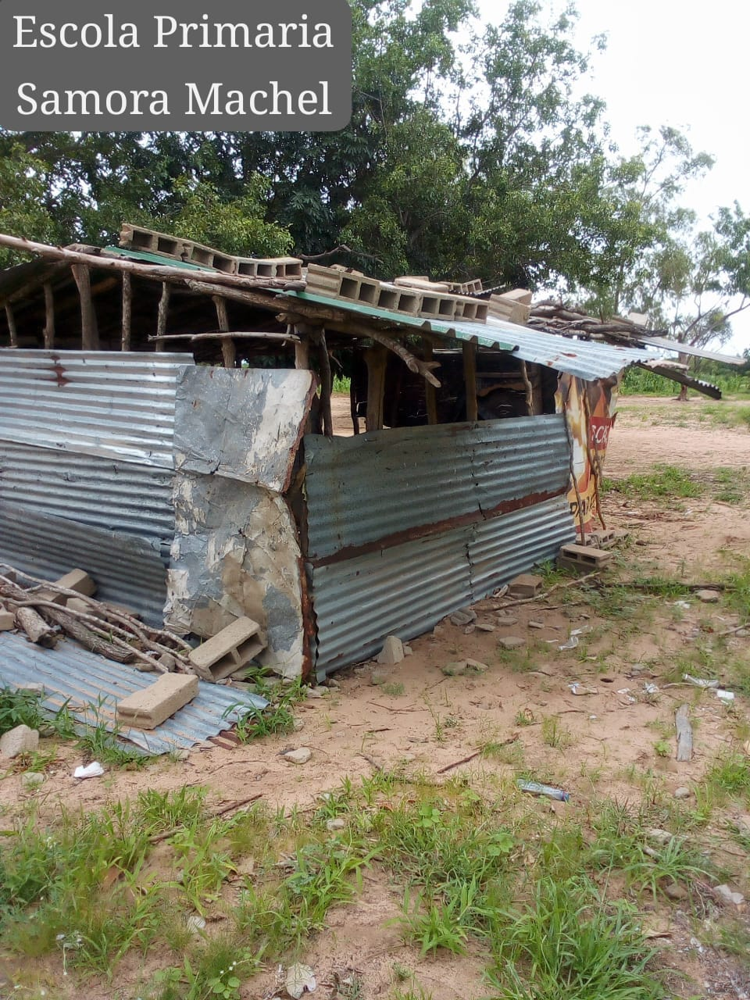
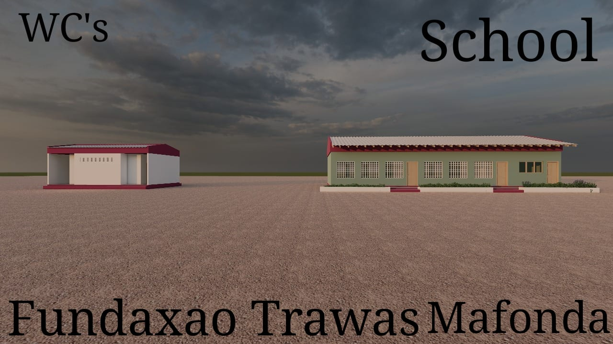

Realidade atual
Estrutura improvisada
Salas sem paredes adequadas, falta de saneamento e barreiras físicas limitam o acesso à educação.
Projeto bandeira
A construção desta escola modelo é a prioridade imediata da Fundação para garantir segurança e qualidade de ensino.

Salas sem paredes adequadas, falta de saneamento e barreiras físicas limitam o acesso à educação.

Salas em alvenaria, WCs escolares e um espaço organizado para aprendizagem.
Objetivo
O projeto procura criar essas condições: substituir precariedade por dignidade, insegurança por estrutura e improviso por capacidade instalada.
O apoio pode financiar materiais, mão de obra, transporte, equipamentos escolares ou acompanhamento técnico.
Apoiar a escolaGaleria